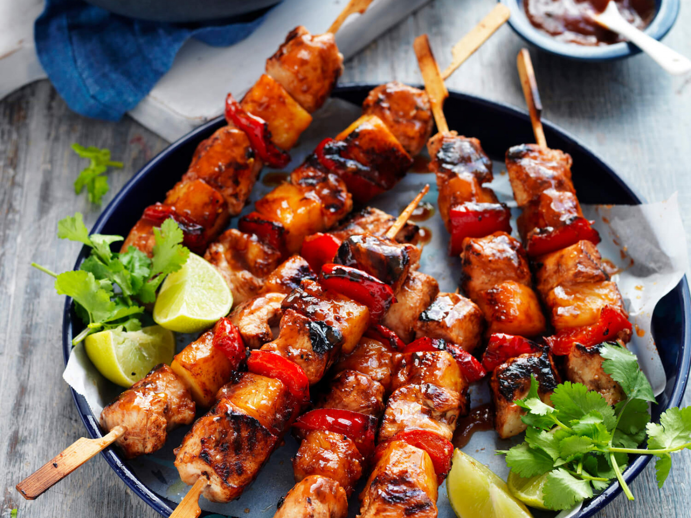

BBQ Pork Skewers

Description
These BBQ pork skewers are perfect for summer entertaining. When you're in the mood for barbecued pork, you have two options: pork ribs or a slowly smoked pork shoulder made into pulled pork. But what if you want something different? In that case, these BBQ pork skewers come highly
recommended. And no, we're not just sticking chunks of pork on a stick! This is way more advanced and way more delicious. Garnish with thinly sliced green onion and drizzle with extra barbecue sauce if you like.
Ingredients
- 1 (2 pound) pork shoulder
- 1/4 cup grated onion
- 1 large clove garlic, finely grated
- 1 tablespoon light brown sugar
- 2 teaspoons kosher salt
- 1 teaspoon freshly ground black pepper
- 1 teaspoon paprika
- 1/2 teaspoon ground cumin
- 1/4 teaspoon cayenne pepper
- metal skewers as needed
- 1/2 cup prepared barbeque sauce
Steps
- Slice pork shoulder in half lengthwise, then slice each half crosswise into 1/8-inch-thick slices.
- Transfer pork to a mixing bowl; add onion, garlic, brown sugar, salt, pepper, paprika, cumin, and cayenne, and mix with your hands until thoroughly combined. Cover tightly with plastic wrap and refrigerate for 4 to 8 hours.
- When ready to cook, preheat a charcoal grill for medium-high heat and lightly oil the grate.
- Weave pork slices onto metal skewers, folding any longer pieces in half as needed; press slices snugly together.
-
Cook skewers on the preheated grill, turning frequently, until browned on the outside and no longer pink in the center, about 30 minutes. Brush on barbecue sauce and turn skewers several times until sauce caramelizes, about 10 minutes more. An instant-read thermometer inserted into the
center should read at least 160 degrees F (71 degrees C).